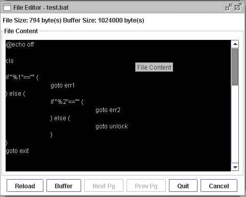
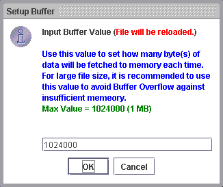
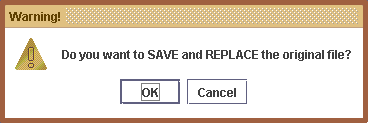

In practical, you could even modify the source code of a program from remote server, and compile it using Remote Command Execution.
One major improvements made to this function is that the editor now support large file size (e.g. over 1MB). With the implementation on buffering, large files is broken down into various segment (based on the buffer value, maximum 1MB).
For example, if you set the buffered value to 1MB, this simply means that when the file is loaded, only 1MB of data will be fetched to the current page/view of the editor, and you could view the remaining portion of the file by moving to the next page, in which next 1MB of data will be fetched and displayed.
You could of course, change the buffer value anytime when editing the file, and the entire file will be reloaded into the editor when you apply the new buffer settings.
Simply right click any preferred file from either File Transfer / File Browser Workspace and select "Edit" to begin editing.

Set the Buffer Size
-
Click the "Buffer" button, this will open the "Setup Buffer" window as below.
 - Input the preferred buffer size in unit - Bytes. Maximum 1024000 which is equivalent to 1MB.
- Click "OK" to apply the changes, click "Cancel" to abort.
- If new buffer value is applied, the editor will reload the entire file.
Move to Next page
- Click the "Next" button, this will load the next portion of data into the editor.
- Amount of data loaded will be bounded by the defined buffer size.
- Modified data on current page WILL BE RETAINED even moving to next page.
Move to Previous page
- Click the "Next" button, this will load the next portion of data into the editor.
- Amount of data loaded will be bounded by the defined buffer size.
- Modified data on current page WILL BE RETAINED even moving back to previous page.
Reload the entire file
- Anytime you wish to reload the entire file, click the "Reload" button, maximum amount of data fetched into each page will be based on the buffer value.
Save the modified file
- When modfication is completed and you want to overwrite the original file, click the "Quit" button.
-
A warning message will be prompted which seek your confirmation.
 - Click "OK" to proceed overwrite, click "Cancel" to abort. The editor will then be closed.
Cancel modifying the file
- Anytime you want to cancel all the modification and quit the editor, click the "Cancel" button.
Related Topics:
|
|
Copyright 2005 © RMIAdmin. All rights reserved. |